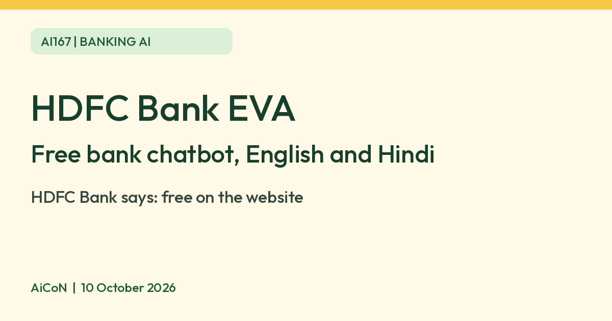

HDFC Bank EVA: free AI chatbot for banking questions, in English and Hindi
HDFC Bank says its EVA chatbot is free to use on the website. It answers banking questions in English or Hindi. For credit-card services, the bank says it asks for your registered mobile number and the last four card digits. This is a bank claim, not a tested security guarantee.

What it is
EVA is HDFC Bank's chatbot. HDFC Bank says it is powered by AI and analytics and is a 24 x 7 assistant for banking questions. You type a product or service, such as a savings account, a loan or a credit card, and it gives answers and links to the right page. You can switch the chat to Hindi or use voice search.
Is it free
Yes. HDFC Bank's own FAQ asks "Do I have to pay fees to use the EVA chatbot?" and answers "No, you don't. HDFC Bank's EVA chatbot is available on the website for free." Any product you then take, such as a loan or card, has its own fees, and terms. Check the product page and final offer before applying; free chat does not make a loan, card or paid service free.
Is it available in India
Yes. It is on HDFC Bank's India website, hdfc.bank.in. Some actions, such as booking a fixed deposit or checking a loan summary, are described for existing customers.
What it can help with
- Opening a savings or salary account and finding a branch.
- Loan information: features, eligibility, charges and documents for personal, business, home, car and two wheeler loans.
- Credit card information and statements for existing cardholders.
- Fixed deposit information, rates and an FD calculator.
How to try it
- Open the EVA page on hdfc.bank.in.
- Type what you need, for example Personal Loan or FD rates.
- Use the answer to find the official product page. Check rates, charges, eligibility and terms there. An application, FD booking, loan closure or card payment is a separate banking action; review it before submitting.
Privacy and safe use
HDFC Bank's general privacy policy includes records of live chat and other communications, and permits processing/sharing with service providers and other processing entities for stated purposes. We did not verify an EVA-specific retention period, model-training rule or deletion route, so do not assume chats are private from the bank, processed only on your device or erased when you close the window.
Open the bank website yourself and confirm the address before entering account-related identifiers. Do not share passwords, full card numbers, PINs, CVV or OTPs in the chatbot, or give someone screen control on the basis of a chat message. If a linked banking flow needs authentication, use the bank's verified secure flow rather than pasting credentials into chat. For urgent account/card problems, use official bank support rather than relying only on an automated answer.
Limits to know
- This is a bank chatbot for HDFC Bank products only. It is not independent advice, so compare other banks before you borrow.
- For services that need card details, HDFC Bank says EVA asks only for your registered mobile number and the last four digits of your card. AiCoN advice: do not type your full card number, PIN, CVV or OTP into any chat.
- Check any rate or fee on the bank's product page before you apply.
- We did not test it ourselves.
Frequently asked questions
Do I have to pay to use HDFC Bank's EVA chatbot?
No. HDFC Bank says it is free on the website.
Sources: HDFC Bank EVA chatbot page, HDFC Bank privacy policy. Checked 10 October 2026.